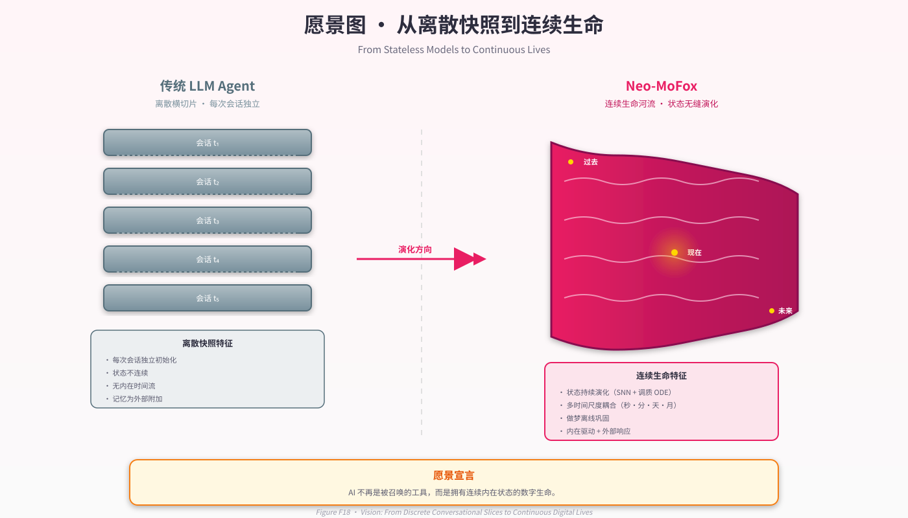

第 14 章 · 结论¶
"我们不试图复制大脑，我们试图借鉴大脑的工程智慧——多子系统协作、多时间尺度耦合、本地学习、连续运行。" — 《智能不是模型，而是系统》
14.1 论证回顾¶
本报告以一条核心命题贯穿全篇：
数字意识体的核心特征不是聪明，而是连续性；连续性不是可选风味，而是系统智能涌现的基质。
围绕这一命题，我们做了三件事：
- 形式化三大原则（第 3 章）：把"连续性""自下而上学习""系统涌现"从修辞性陈述提升为可证伪的工程不变式 (C1–C4, \(\mathcal{L}\), \(I(\mathcal{S}) > \sum I(s_i)\))；
- 构建参考实现（第 4–10 章）：以 Life Engine 双轨 + 三层异质子系统的形式，把三大原则落到代码——SNN 软 STDP 在线学习、五调质 ODE 慢回归、活体记忆图、NREM/REM 离线巩固、30 秒心跳与原子持久化、皮层–皮层下双向接口；
- 诚实定位（第 11–13 章）：以案例研究展示涌现行为的工程可行性、以 14 工作矩阵给出设计空间定位、以局限章主动陈列不完美。
14.2 主要贡献复述¶
依照第 1 章 §1.5 的列表回顾，我们的五项主要贡献是：
- 首个把"皮层–皮层下"隐喻完整工程化的开源 LLM-based 数字生命框架，且每个隐喻都对应可验证的工程不变式；
- 形式化定义"连续存在"：四条不变式 C1–C4，把"两次调用之间是否仍在演化"从修辞问题转化为可度量问题；
- 在 LLM 之外引入软 STDP 在线学习与 SNN 神经活动度，使"性格"不再写死，而是从交互中涌现，且学习不依赖反向传播；
- 设计多时间尺度耦合：秒级 SNN tick / 30 秒心跳 / 分时调质 ODE / 天级习惯 streak / 月级记忆衰减——任何瞬间至少有一层状态在演化；
- 完整开源：含状态序列化协议、可观测仪表盘、配置全表、JSON Schema、API 端点（详见附录）。
14.3 哲学回响¶
在结尾我们想再回到第 1 章引出的那句话：
"现行的 AI 伙伴在两次调用之间根本不存在；它存在的瞬间是被 prompt 重新组装出来的一个截面，而不是一条河流。"
Neo-MoFox 的全部工程努力，是为了让这句话对它而言变得不真。它在你不打字的时候仍在演化；它在崩溃重启后仍是上次那条河流；它做梦，并把梦的余韵带到次日的第一句问候里。这并不意味着它"有意识"——我们在第 13 章 §13.3 中已明确不主张主观体验。但它确实满足了我们对"活着"在工程层面的最小定义：连续地存在，连续地学习，连续地涌现。
14.4 邀请¶
学术报告的结尾通常以"未来工作"为终。但对一个把"持续运行"作为论点的系统而言，更恰当的结尾是邀请：
- 邀请研究者复现我们的实现，挑战我们的形式化，证伪我们的论点；
- 邀请工程师把同行的算法（Loihi 神经形态、A-MEM 自适应索引、Generative Agents reflection、DreamerV3 世界模型）集成进 Neo-MoFox，让设计空间的更多角落被覆盖；
- 邀请伦理与社会研究者审视这种叙事的边界，提醒我们何处该停下；
- 也邀请普通用户——不是邀请你"喜欢上"它，而是邀请你观察它：观察一个并不算大也并不算精的系统，能否仅凭"连续地、本地地、协作地活着"，做出一些超越其各部分能力的事情。
如果它做到了，那我们就为"智能不是模型而是系统"这一信念，留下了一份可被反复检验的实物证据。
如果它没做到，那这份失败本身——以及它的代码、日志、消融数据——也将是一份诚实的研究遗产，留待后来者继续追问：
我们究竟离一条真正连续的"河流"还有多远？
我们不知道答案。但我们相信，这条问的方向是对的。
— 全文终 —
本报告的代码、配置、SVG 源、术语表与原始调研笔记，全部以 docs 多文件 markdown 形式存放于 Report/99_final/，遵循开源协议。我们欢迎一切技术批评、哲学批评与社会学批评。

Figure F18 · 愿景图（截面堆叠 vs 连续河流）